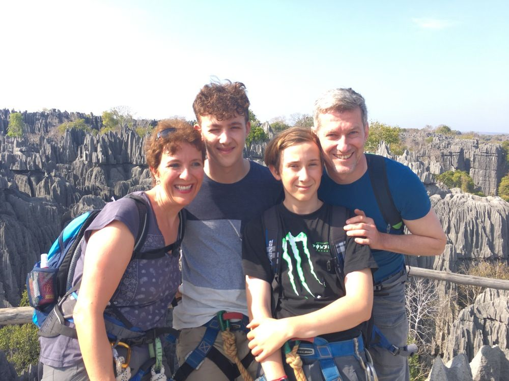

PRIORI macht es möglich – Madagaskarreise war ein voller Erfolg
„Liebes Priori-Team
unsere Reise durch Madagaskar diesen Sommer war ein voller Erfolg!
Unvergesslich, beeindruckend, spannend, wunderschön.
Unvergesslich:
All die herzlichen Empfänge die wir erlebten; angefangen beim fröhlichen Willkommen vom Fahrer der uns mitten in der Nacht am Flughafen abholte und nur zwei Stunden später wieder an denselben Flughafen brachte, dann Nirina der uns ganze zwei Wochen begleitete und uns sein Land näher brachte, ebenso ihr aufgestelltes Prioriteam in Tana, die Angestellten in den besuchten Unterkünften sowie natürlich die laut fröhlichen „wasawasa“ Rufe der vielen madagassischen Kinder 🙂 .
Beeindruckend:
Wie die Menschen tapfer sowie kraftvoll ihre Arbeiten auf dem Feld verrichten,lange Wege zu Fuss und schwerbeladen hinter sich bringen, überhaupt all diese Handarbeit! Und wie phantasievoll die Menschen den Widrigkeiten trotzen. Ein Madagasse sagte uns einmal zu Recht: das Wort „unmöglich“ exisiert für sie nicht.
Spannend:
Zum Beispiel die 12-stündige Zugfahrt durch den Dschungel! Wir waren begeistert!! Während des ganzen Tages hatten wir ein Lächeln auf unsern Gesichtern, Freude in den Augen sowie prickelnde Spannung im Gemüt. Spannend war auch unsere Tsingy-Klettersteig-Wanderung bei der ich fast an meine Grenzen kam (Höhenangst) und meine drei Männer am liebsten den ganzen Tag durchgeklettert wären 😉 oder die Flussüber- querungen wo die Autos auf Flosse geladen wurden; was haben wir gespannt zugeschaut und gestaunt!
Wunderschön:
All die abwechslungsreichen Landschaften, die unglaublichen Farben, die glänzenden Sternenhimmel, die Menschen mit ihren so unterschiedlichen Gesichtszügen sowie Hautfarben….ihr Lächeln.
Die Reise war vom ersten bis zum letzten Tag super gut organisiert und somit ein voller Erfolg. Wir fühlten uns immer gut aufgehoben, gut informiert und schätzten Nirinas erfahrene Fahrtkünste, seine routinierte Gelassenheit dabei sowie seine Flexibilität (wir brauchten doch ab und zu extra Pausen bei längeren Fahrten um ein Stück zu Fuss zu gehen). Ein herzliches Dankeschön auch an das Team in Tana; sie haben uns herzlich empfangen und uns die spannende Geschichte der Piraten engagiert und zudem sehr interessant vorgetragen. Für Fragen sowie für unsere Anliegen haben sie sich Zeit genommen und wir haben gespürt wie wichtig es ihnen ist, dass wir uns wohl fühlten.“
Ihre Familie W.
